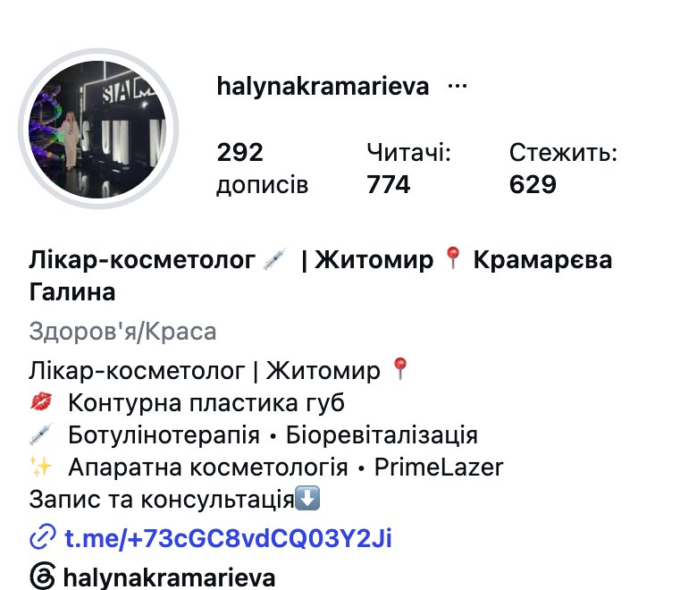
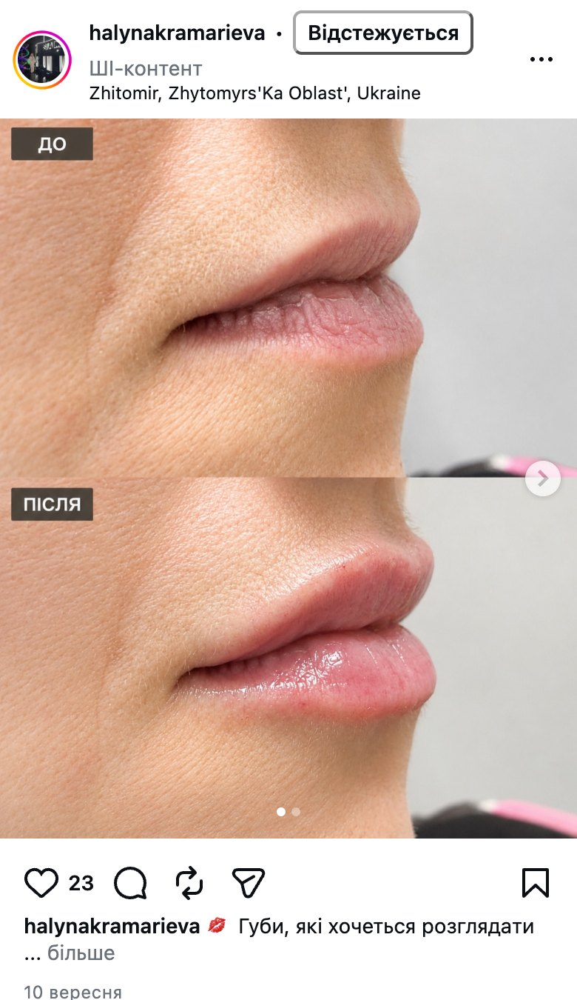
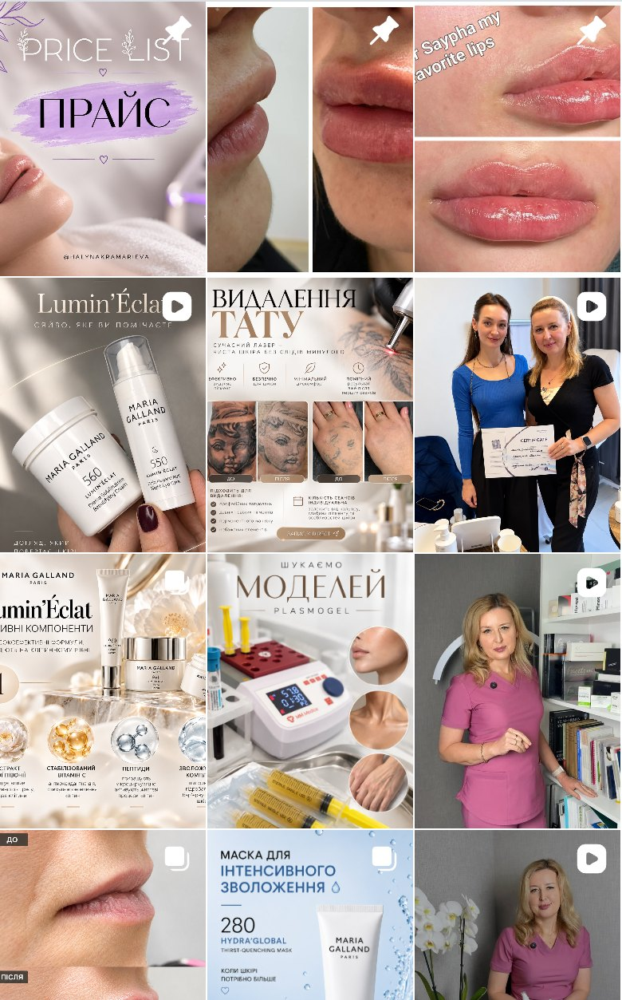
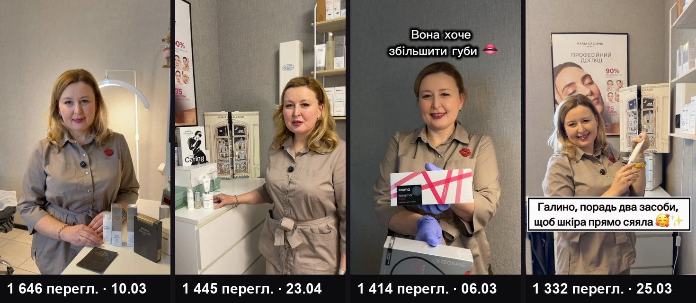
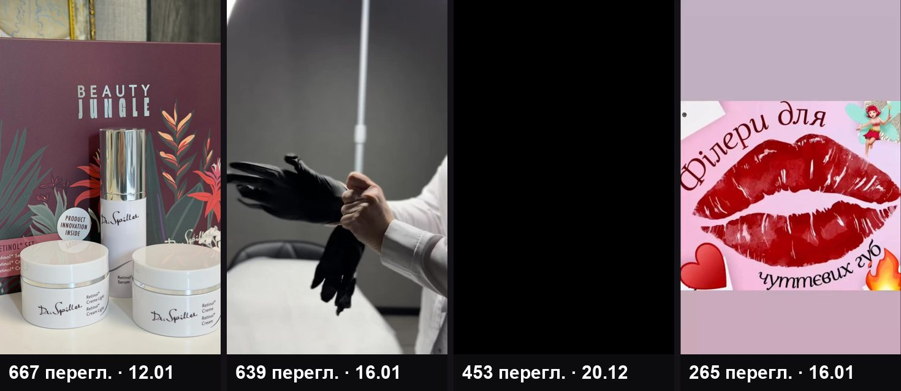
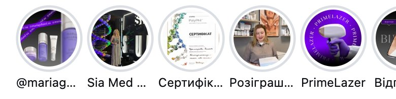

Що вже працює, що гальмує записи і що змінити першим. Усі цифри зняті з публічної сторінки @halynakramarieva 30.10.2026.
У вас є те, чого бракує багатьом: широкий прайс із високим чеком, навчання й конференції і рілси, де ви в кадрі. Гальмують три речі: кнопка запису веде в канал без контактів, стрічка більше про бренд догляду, ніж про ваші процедури, і під двома «до/після» Instagram показує мітку «ШІ-контент».

Шапка закінчується словами «Запис та консультація ⬇️», а посилання веде в Telegram-канал «Косметолог Halyna Kramarieva»: 185 підписників, опис порожній, контактів для запису там немає. У дописах при цьому написано «Запис у Direct». Адреси й телефону в профілі немає.
Один шлях: «Запис і ціни в Direct» плюс посилання на ваш особистий Telegram або форму запису. Адреса кабінету одним рядком у шапці й окремий хайлайт «Як записатись».
Людина, яка вже вирішила записатися, не повинна шукати, куди писати. Кожен зайвий крок тут коштує вам записів, і це найдешевша зміна з усього списку.

Instagram позначив 9 дописів як «ШІ-контент». Серед них «до/після» губ (10.09), видалення тату «до/після» (21.10) і закріплений прайс. Мітка стоїть одразу під вашим ім'ям, і її бачить кожен.
Результати, кабінет і процес показувати тільки реальними фото й відео, без генерованих фонів і обробки. Інфографіку збирати з ваших фото. Найімовірніше, мітка з'являється через інструмент, яким робили картинки, тож перевіряємо кожен файл до публікації.
«До/після» з міткою «ШІ» викликає сумнів саме там, де потрібна довіра. В опитуванні 8 000 людей у 8 країнах (грудень 2025) 31% сказали, що видимий ШІ-контент знижує їхню довіру до бренду, і лише 7% сказали, що підвищує.

17 з 55 дописів за рік рекламують засоби Maria Galland для дому: лінійки, набори, адвент-календар. Ще 4 рекламують інші засоби (Good Hair, Dr.Spiller). Серед останніх 30 дописів таких 13. Найбільший хайлайт, понад 35 сторіз, теж про бренд. Процедури з вашого прайсу (губи, ботулінотерапія, колагеностимуляція, лазер) з'являються помітно рідше.
Рубрики навколо процедур, за якими до вас ідуть: губи, ботулінотерапія, біоревіталізація й колагеностимуляція, PrimeLazer. Догляд лишається, але як один допис із чотирьох.
За вашим прайсом ботулінотерапія коштує від 2 000 грн за зону, а колагеностимуляція від 13 000 грн. Саме ці процедури показують вас як лікаря, і саме за ними клієнтка приходить у кабінет.
У 5 з 7 найпереглядуваніших рілсів на обкладинці ви і жива ситуація з кабінету. Серед 6 найслабших (265–667 переглядів) у 4 вашого обличчя немає взагалі: банка засобу, рукавички, графіка «Філери для чуттєвих губ», чорний перший кадр. Говорите в кадрі ви рідко: з чотирьох топових рілсів, які ми прослухали, ваш голос звучить лише в одному (10.03, 1 646 переглядів, другий результат року), в інших музика й текст.


Знімати більше того, що вже спрацювало: вас у кадрі, питання клієнток, ситуації з кабінету й розмовні рілси, де ви коротко пояснюєте одну процедуру. Перша секунда має одразу показувати людину й тему, а не логотип чи упаковку.
Instagram ранжує рілси за досмотром, вподобайками й пересиланнями (Адам Моссері, голова Instagram). Відео, яке хочеться переслати подрузі, виводить вас на людей, які вас ще не знають.
Факт: розподіл переглядів. Висновок, що головна причина саме в обличчі на обкладинці, це наша гіпотеза, і перший місяць її перевіряє.

10 хайлайтів. У «Відгуках» лише кілька сторіз, і найсвіжіша додана 56 тижнів тому. Результати губ розкидані між «Beauty Lips» і «Вибране», найновіші там старші за рік. Дві добірки про одну конференцію (2025 і 2026). Немає «Про мене», «Ціни», «Питання» і «Як записатись».
6 хайлайтів по шляху клієнтки: Про мене → Процедури й ціни → Результати → Відгуки → Питання (біль, відновлення, протипоказання) → Запис і адреса. Оновлювати щомісяця.
Хайлайти продають, навіть коли ви в кабінеті. Відгуки читають майже всі: 97% людей перед зверненням до локального бізнесу (опитування BrightLocal, США, 2026).
На аватарі ви на повний зріст на сцені SIA Med, і в маленькому колі обличчя майже не видно. У 8 рілсах замість підпису лише хештеги, емодзі або нічого. У дописі 23.09 лишились дужки шаблону «[Сума від 900 грн] замість [Стандартна ціна в клініці від 2500] грн» і фраза «100% безпека». Розіграш 10.02 просив «постав + у коментарях» і «постав ❤️».
Аватар: ваше обличчя крупним планом на спокійному фоні. Підпис: перший рядок зачіпає, далі одна думка і один заклик. Без абсолютів на кшталт «100% безпека» і без механік «постав +».
Аватар видно в кожному коментарі, сторіз і пошуку. Медичні гарантії й абсолюти ризиковані для лікаря юридично, а заклики «постав +» Meta прямо відносить до engagement bait і знижує охоплення таких дописів і акаунтів.
У пошуку Instagram за шістьма запитами («косметолог житомир», #косметологжитомир, #житомиркосметолог, «ботокс житомир», «губи житомир», «косметологія житомир») у видачі дописи інших косметологів, ваших там немає. Ось кого показує пошук і що в них працює.
«Один день разом зі мною. Косметолог у Житомирі» (19 682 перегляди) і «Ботокс чи філер? Показую на своєму обличчі» (10 027). У шапці одна дія: «Запис і ціни» з онлайн-записом.
Гачок на обкладинці «Я стала жертвою косметології» (10 470) і процес губ крупним планом (7 304). Вона амбасадорка Totis Pharma, але стрічка про її процедури, а не про засоби.
Відповідає на страхи клієнток: «Ботокс не працює?» про корекцію через 14 днів (4 869). Тренд-процедура Barbie Botox (5 180). Адреса кабінету прямо в шапці.
Аудиторія майже як у вас, але за місяць 7 дописів проти ваших 4. Найпопулярніше особисте: відпустка (1 938) і день народження (1 793). У шапці «Безкоштовна консультація» і «Запис у Direct або ↓» з особистим Telegram.
30 хвилин дзвінка: покажу план першого місяця і перші 4 теми для зйомки, складені під ваш прайс.